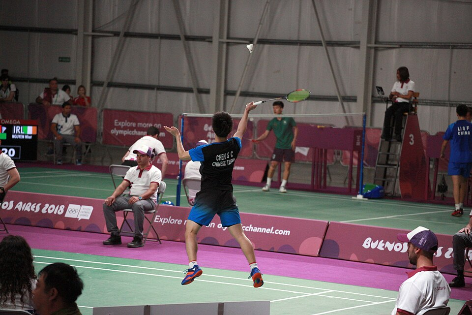
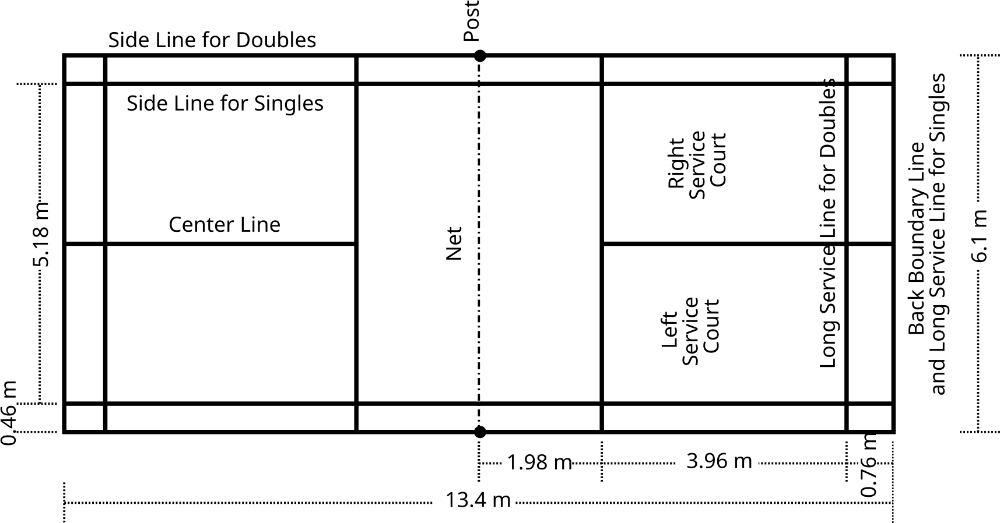

01 / The scoreboard
Rally point scoring
A standard match is the best of three games. A side wins a game by reaching 21 points with at least a two-point lead. Because a point is awarded after every rally, you can score whether you served or received.


Players change ends after each game. In a third game, they change ends when one side first reaches 11 points. Event regulations can specify additional match procedures, so check the rules for the competition you are playing.
02 / Lines & boundaries
Learn the court
The net divides the rectangular court into two sides. The boundary lines count as part of the area they mark, so a shuttle touching a line is in.
Singles
Uses the inner side lines, making the court narrower. The back boundary line remains the back boundary during a rally.
Doubles
Uses the outer side lines, making the court wider. During service, the back service line is inside the back boundary; during rallies, the full back boundary is in.
Service courts are diagonal boxes. Their front edge is the short service line. Knowing the service boundaries separately from rally boundaries helps avoid common “in or out” confusion.


03 / Starting a rally
Serve to the diagonal court
- Stand in the correct service court. The server and receiver stand in diagonally opposite service courts without touching the boundary lines.
- Use the score to choose a side. In singles, serve from the right when the server’s score is even and the left when it is odd. In doubles, the serving side’s score determines its service court.
- Send the shuttle diagonally. The serve must travel over the net and land inside the receiver’s service court. Both feet must remain in contact with the court and stationary until the serve is delivered.
- Keep the serve continuous. Release and strike the shuttle in one forward service action, following the official serving rules for racket and shuttle contact.
After the serve, either player on each side may play the shuttle in doubles. Partners do not have to alternate shots.
04 / Play & replay
What ends a rally?
After a successful serve, players return the shuttle over the net until it lands, goes out, or a fault or let is called. A side wins the rally if the shuttle lands inside the opponent’s court or the opponent commits a fault.
Common faults
The shuttle lands out or fails to cross the net; a player touches the net with a racket or body; a player hits the shuttle twice in succession; or a player obstructs or deliberately distracts an opponent.
Lets
A let stops play and the rally is replayed without changing the score. It may be called when an unexpected event interrupts play or a receiver was not ready and made no attempt to return the serve.
05 / One or two a side
Singles & doubles
Singles is one player against one player. Doubles is two against two, with a larger rally court and a narrower doubles service court. In both formats, each rally awards one point.
In doubles, the same player continues serving for their side after winning a rally on serve, switching service courts with their partner as the side’s score changes. When the receiving side wins a rally, it wins the point and becomes the serving side. The players’ positions depend on the score and which side is serving; do not assume partners alternate every rally.